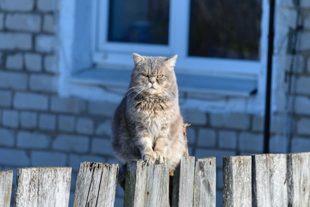
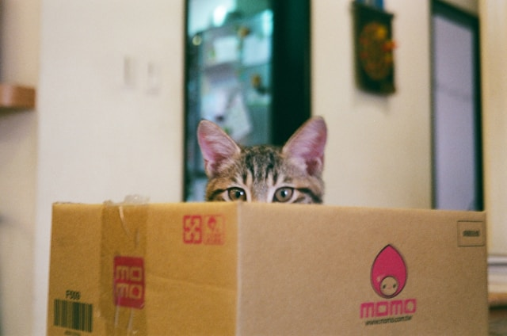
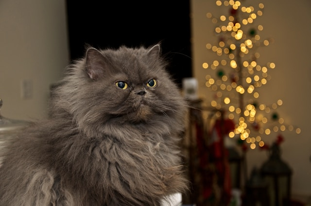
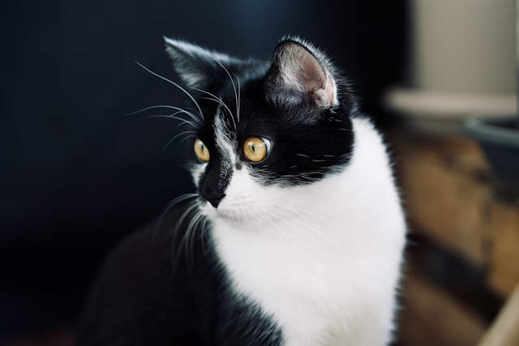

Grumpy Cat
The world's most famously frowning feline, Grumpy Cat (real name: Tardar Sauce) became an internet sensation in 2012. Her permanently disgruntled expression made her the face of countless memes.
Despite her grumpy appearance, she brought joy to millions and built a multi-million dollar brand. for more updates.
Maru
Japan's most famous cat, Maru is known worldwide for his love of boxes and sliding adventures. Since 2008, his YouTube channel has garnered over 350 million views.
This Scottish Fold cat has starred in several books and commercials. for more Maru moments.
Nala Cat

With over 4 million Instagram followers, Nala holds the Guinness World Record for the most followed cat on Instagram. Her charming cross-eyed look and sweet personality have won hearts globally.
From shelter cat to social media star, Nala inspires pet adoption worldwide. to follow her journey.
Lil Bub

Born with several genetic uniquenesses, Lil Bub became famous for her tiny size, big eyes, and perpetually protruding tongue. She helped raise over $700,000 for animal charities.
Though she passed in 2019, her legacy of helping special needs pets continues. to honor her memory.
Colonel Meow
Holder of the Guinness World Record for longest fur on a cat (9 inches), Colonel Meow was known for his intense stare and majestic appearance. His 'minions' followed his every command on social media.
This Himalayan-Persian mix ruled the internet with an iron paw. to join his army.
Henri Le Chat Noir
Known as the existential cat philosopher, Henri stars in artistic black-and-white films where he contemplates life's complexities with French-subtitled narration.
His sophisticated commentary on modern life has earned him millions of views. for more philosophical musings.